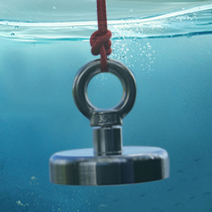
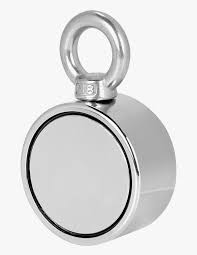

I recently started a new hobby that not only gets you outside and wanting to find new locations it also helps clean up the water ways. Its called magnet fishing. So basically you take a strong neodymium magnet and attach it on a strong piece of rope 65-100 feet long and give it throw in to the water. Some times its possible to recover lost treasures that others have lost like cellphones, keys, knives ,and so much more. Even if you don’t find anything of value the other goal is to clean up the metals of our waters. Its also a great way to travel and explore new places on Vancouver Island and beyond.
 